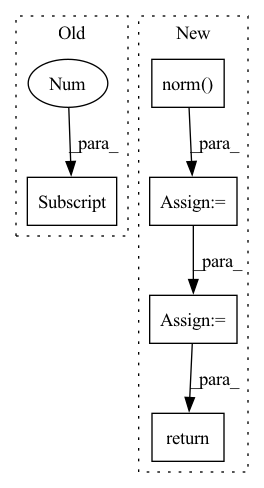

Pattern ID :3270
Before Change
def latent_optimise(zs, fake_labels, gen_model, dis_model, conditional_strategy, latent_op_step, latent_op_rate,
latent_op_alpha, latent_op_beta, trans_cost, default_device):
batch_size = zs.shape[0]
for step in range(latent_op_step):
drop_mask = (torch.FloatTensor(batch_size, 1).uniform_() > 1 - latent_op_rate).to(default_device)
z_gradients, z_gradients_norm = calc_derv(zs, fake_labels, dis_model, conditional_strategy, default_device, gen_model)
delta_z = latent_op_alpha*z_gradients/(latent_op_beta + z_gradients_norm)After Change
fake_images = generator(zs, fake_labels)
output_dict = discriminator(fake_images, fake_labels, eval=False)
z_grads = cal_deriv(inputs=zs, outputs=output_dict["adv_output"], device=device)
z_grads_norm = torch.unsqueeze((z_grads.norm( 2, dim=1) **2), dim=1)
delta_z = lo_alpha*z_grads/(lo_beta + z_grads_norm)
zs = torch.clamp(zs + drop_mask*delta_z, -1.0, 1.0)
if cal_trsf_cost:
if step == 0:
trsf_cost = (delta_z.norm(2, dim=1)**2).mean()
else:
trsf_cost += (delta_z.norm(2, dim=1)**2).mean()
else:
trsf_cost = None
return zs, trsf_cost
def cal_deriv4gp(real_images, real_labels, fake_images, discriminator, device):
batch_size, c, h, w = real_images.shapeIn pattern: SUPERPATTERN
Frequency: 3
Non-data size: 5
Instances Fragment ID: 12659489
Project Name: postech-cvlab/pytorch-studiogan
Commit Name: 8820045ea9457f0849d37143aab4d7ac330b8a11
Time: 2021-07-29
Author: first287@naver.com
File Name: src/utils/losses.py
M Class Name: AnonimousClass
N Class Name: AnonimousClass
M Method Name: latent_optimise(11)
N Method Name: latent_optimise(11)
M Parent Class:
N Parent Class:
M File Name: src/utils/losses.py
N File Name: src/utils/losses.py
M Start Line: 49
M End Line: 67
N Start Line: 96
N End Line: 111
Before Change
allow_unused=allow_unused)
// implicit grad
implicit_grad = torch.autograd.grad(loss, path[1] .trainable_parameters())
for i in range(1, len(path)-1):
implicit_grad = darts_helper(implicit_grad, path[i], path[i+1], config)
After Change
config = curr.config
R = config.darts_alpha
eps = R / to_vec(vector).norm()
// positive
for p, v in zip(curr.trainable_parameters(), vector):
p.data.add_(v.data, alpha=eps)
loss_p = curr.training_step(curr.cur_batch)
grad_p = torch.autograd.grad(loss_p, prev.trainable_parameters())
// negative
for p, v in zip(curr.trainable_parameters(), vector):
p.data.add_(v.data, alpha=-2*eps)
loss_n = curr.training_step(curr.cur_batch)
grad_n = torch.autograd.grad(loss_n, prev.trainable_parameters())
// reverse weight change
for p, v in zip(curr.trainable_parameters(), vector):
p.data.add(v.data, alpha=eps)
implicit_grad = [(x - y).div_(2 * eps) for x, y in zip(grad_n, grad_p)]
return implicit_grad
Fragment ID: 12659481
Project Name: leopard-ai/betty
Commit Name: 5542eb6dd30fc3b008a0626760a339f3fe31088e
Time: 2022-06-03
Author: sangkeuc@andrew.cmu.edu
File Name: betty/hypergradient/darts.py
M Class Name: AnonimousClass
N Class Name: AnonimousClass
M Method Name: darts(3)
N Method Name: darts(7)
M Parent Class:
N Parent Class:
M File Name: betty/hypergradient/darts.py
N File Name: betty/hypergradient/darts.py
M Start Line: 6
M End Line: 49
N Start Line: 6
N End Line: 36
Before Change
for smap in saliency_maps:
sparse_feat = torch.sum(torch.abs(smap))
n_channels = smap.shape[0]
kernel = torch.tensor([[0., 1., 0.],
[1., -4., 1.],
[0., 1., 0.]])
kernel = kernel.view(1, 1, 3, 3).repeat(1, n_channels, 1, 1)After Change
def cal_explanation_feature(self, saliency_maps: torch.Tensor) -> float:
sparse_feats = saliency_maps.flatten(start_dim=1).norm(p=1) // (N)
smooth_feats = self.conv2d(saliency_maps).flatten(start_dim=1).norm(p=1) // (N)
persist_feats = 0.0 // todo (N)
exp_feats = self.lambd_sp * sparse_feats + self.lambd_sm * smooth_feats + self.lambd_pe * persist_feats
return exp_feats.median()
Fragment ID: 12659497
Project Name: ain-soph/trojanzoo
Commit Name: afe7bbd2d2e9f901ee8cf56c3b9320b9272a81af
Time: 2020-07-22
Author: ain-soph@live.com
File Name: trojanzoo/defense/backdoor/neuron_inspect.py
M Class Name: Neuron_Inspect
N Class Name: Neuron_Inspect
M Method Name: cal_explanation_feature(2)
N Method Name: cal_explanation_feature(2)
M Parent Class: Defense_Backdoor
N Parent Class: Defense_Backdoor
M File Name: trojanzoo/defense/backdoor/neuron_inspect.py
N File Name: trojanzoo/defense/backdoor/neuron_inspect.py
M Start Line: 68
M End Line: 84
N Start Line: 68
N End Line: 73